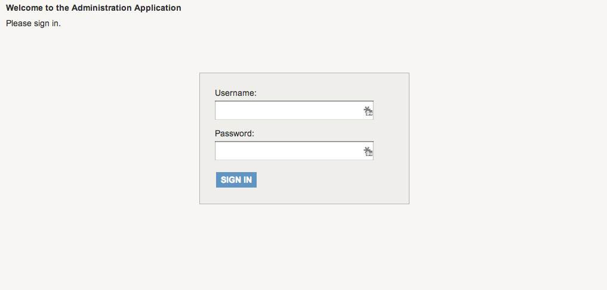
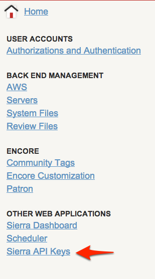
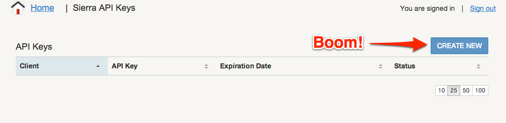
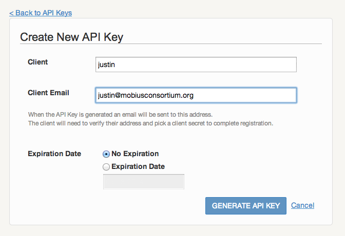
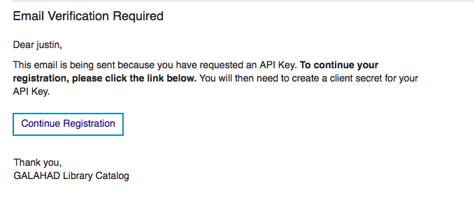
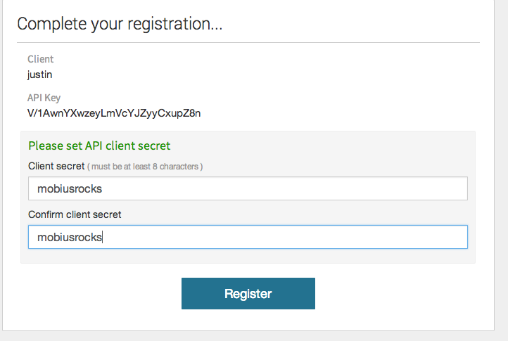

Created by Justin Hopkins
Yeah, like a month ago...
This is your last chance. After this, there is no turning back. You take the blue pill - the story ends, you wake up in your bed and believe whatever you want to believe. You take the red pill - you stay in Wonderland and I show you how deep the rabbit-hole goes.
It's not that deep.

If you don't have it, you'll need to add the permission "Api Consumer Administration (1052)"





Yes.
require 'oauth2'
baseurl = "https://galahad.searchmobius.org/"
client = OAuth2::Client.new('API_KEY_HERE', 'CLIENT_SECRET_HERE', :site => "#{baseurl}", :token_url => '/iii/sierra-api/v1/token')
token = client.client_credentials.get_token
beforeDate = Time.now.utc.iso8601.to_s
afterDate = (Time.now - (2*7*24*60*60)).utc.iso8601.to_s
response = token.get('iii/sierra-api/v1/bibs?createdDate=[' + afterDate + ',' + beforeDate + ']&deleted=false&suppressed=false')
# results is a Hash, containing one key/value: "entries"
results = response.parsed
# entries is an array, each value is a Hash.
entries = results["entries"]
# API returns results sorted by id, which tends to result in newer stuff last
# We want newer stuff first
entries = entries.sort_by!{|value| value.fetch("createdDate", "")}.reverse
puts "New titles added in the last two weeks
"
entries.each do |value|
recordUrl = baseurl + "record=b" + value.fetch("id", "").to_s
createDate = Time.iso8601(value.fetch("createdDate", "")).to_s
title = value.fetch("title", "")
puts <<-eos
#{title}
- Added on: #{createDate}
- View in catalog
eos
end
"I don't even see the code."
Yes, it's ugly.
But it works!
Slides: http://bit.ly/sierra_api